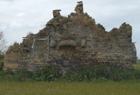

Ce gigantesque retournement de la terre
This Gigantic Furrowing of the Ground

Claire Angelini – Frankreich 2015
71 min – HD – French OV Engl. ST
Sc+DoP+E+S+P: Claire Angelini – Mit Bernard Pommier, Carlo Angelini, Julien Thorel
"Normandy is a place steeped in history – after the Allied landings on 6th June 1944, it became one of the Second World War's most hotly contested territories. Making direct reference to Jean Grémillon's film LE 6 JUIN À L’AUBE, which was shot in 1944/5 under the direct influence of the total destruction of the region, this documentary essay carries out an inspection in search of the traces left behind by history 70 years later." – Berlinale, Forum
tuesday 13 oct 6.30 p.m. werkstattkino
Claire Angelini, born in 1969 in Nizza, France and currently lives and works in Munich and Paris. Study of Fine Arts at the ENSBA in Paris and Art History in the Sorbonne. Her videos were exhibited in numerous installations. Besides her audiovisuell works she also publishes artist books.
Films (selection): Ici s’atteint la limite de l’effort pédagogique 2004 – Es geht eine dunkle Wolk herein 2005 – SHE/SEE 2007 (UX’07) – Le retour au pays de l’enfance 2009 (UX’09) – Par l’eau et par le feu 2010 (UX’10) – La guerre est proche 2011 (UX’11)